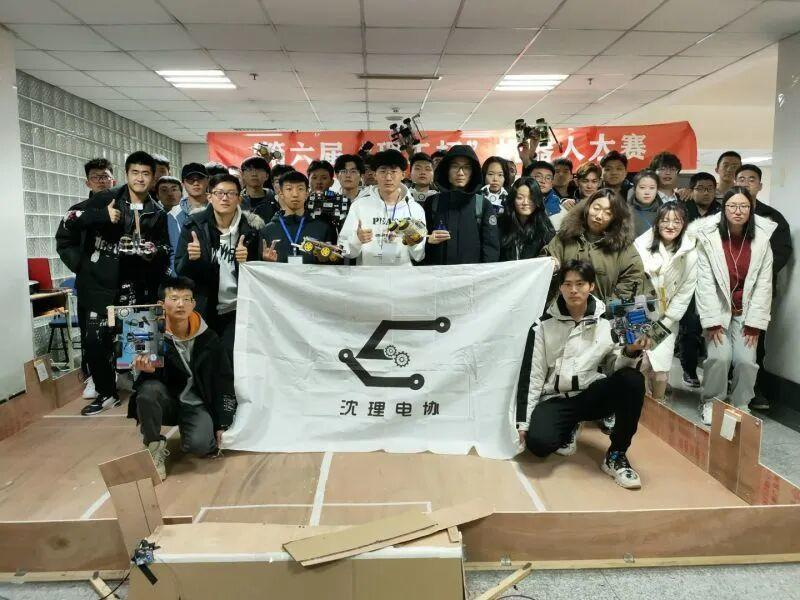
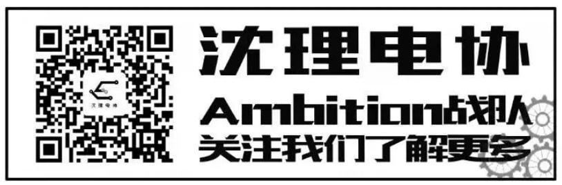

2022级招新工作圆满结束
终于等到你
还好没放弃
欢迎真诚的你
来到我们这个温暖的大家庭
一年一度的招新工作圆满地落下了帷幕。大一新生带着饱满的热情加入电协大家庭，希望你们能用自己的学识与激情，刻印属于你们的青春徽章
本次招新工作的圆满成功是与前期的充分准备密切相关的。准备期间我们反复斟酌策划。极力落实到每个细节，并精诚合作、发挥创造力。事实证明我们的策划是成功的。
向右滑动观看更多~~
其次，这也离不开整个电协的凝聚力。各个部门坚守自己岗位，从招新宣传、值班安排，到招新摆台、统计结果……通过大家的共同努力，我们做到让每一个想加入电协的同学都能够找到渠道，收到反馈。
最忙碌的阶段也是最幸福的时光。招新的两天里，我们怀揣着兴奋，迎接每一个前来报名加入电协的同学。他们每个人都有不同的特点，有的激情洋溢，有的充满好奇。
这里是你的始点,更是你的出发点。坚持心中的微光，梦想在这里起航

电协全称电子技术与应用协会，成立于2008年10月，是一个以学习电子知识为主，培养动手能力的学术性社团，是本校最大、最有影响力的社团之一。


社团积极参加各项科技类竞赛，荣获国家级一等奖一项，国家级二等奖两项，国家级三等奖五项，省级奖项百余项。社团培养了大量具有电子技术实践经历以及相关电子知识的人才，参与参加国家级机器人比赛，不仅在高校之间的各种大赛中取得了优异的成绩，而且为社会上的各个招聘企业输送了大量电子技术人才。
左右滑动查看更多
电协内部分为技术部和行政部。
行政部分为信息部、外联部，人事部，财务部。
技术部分为硬件组、电控组、视觉组、机械组。
各个部门相互配合，密不可分。
想成为电协中坚力量的同学记得关注电协公众号，后期会发布招新通知~~
-END-
文字|恩嘉
排版|恩嘉
审核|李现亮
